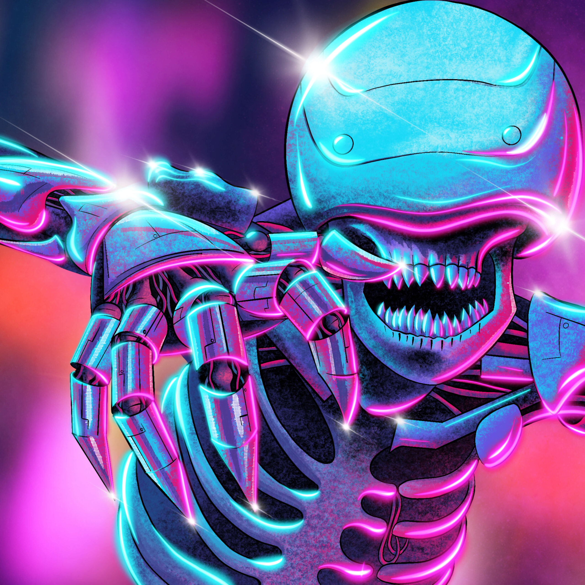

Graphic Design Is Your Passion
Design is a solution to a problem. Art is a question to a problem.
Graphic design is a craft where professionals create visual content to communicate messages. By
applying visual hierarchy and page layout techniques, designers use typography and pictures to meet
users’ specific needs and focus on the logic of displaying elements in interactive designs, to
optimize the user experience.

BREATHE LIFE INTO YOUR ARTWORk
Illustration

Drawing is the foundation of most artistic practices, especially illustration. As a graphic illustrator, you'll have the chance to create visual identities, cover art and more, all while using the fundamental principles of form, color, and composition.
Game Design
Like UI and motion graphics, game design works at the forefront of technology and creativity. Studying game design at Berkeley College gives you the opportunity to work one-on-one with experts as you navigate complex tech and exciting creative endeavors.
Motion Graphics and Animation

By studying motion graphics, you'll focus on animating visual media. This includes everything from typography to imagery, and everything in between. As a relatively new field in graphic design, motion graphics and animation present exciting opportunities to balance technical and creative skills.